View Source Chapter 3 - Data Visualization
Mix.install([
{:explorer, "~> 0.3.1"},
{:vega_lite, "~> 0.1.6"},
{:kino, "~> 0.7.0"},
{:kino_vega_lite, "~> 0.1.6"}
])
3-0-introduction
3.0 - Introduction
what-is-data-visualization
What is Data Visualization?
Storytelling is at the heart of Data Visualization. Regardless of the type of information or data, there is always a story to tell. Thus, Data Visualization could be defined as the art of using graphics, driven by data, as a method of communication that provides insight and conveys understanding. The means by which you consume the information can be either static or dynamic (i.e. interactive). Below are a few examples of types of visualizations you might create.
- Outliers — Outliers identify data that is outside the "norm" of what you'd expect to see. Using different colors is a great way to highlight potential outlier data points.
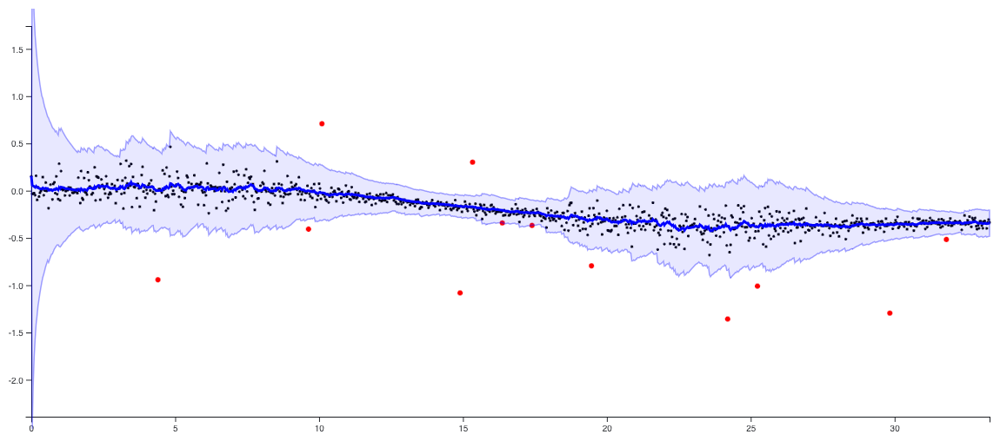
- Trends or Relationships — Regressions lines (red below) help the reader understand how strong or weak the relationship between multiple variables (i.e.
xandy) can be.
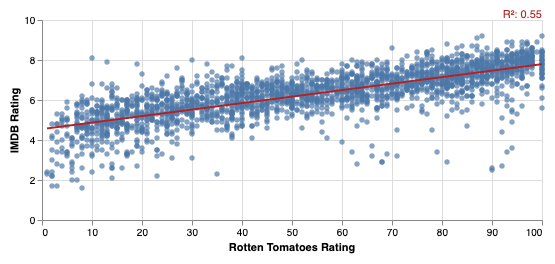
- Groups or Clusters - Clusters help you identify sub-groups within your datasets. Color can provide clarity where you may not have seen it before by showing how information is grouped.
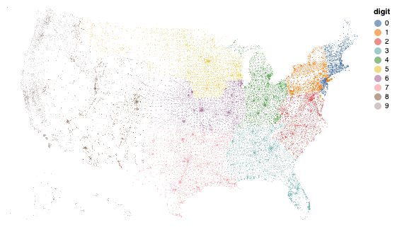
- Rankings — Line charts can be used to help show how the order of data may change over time.
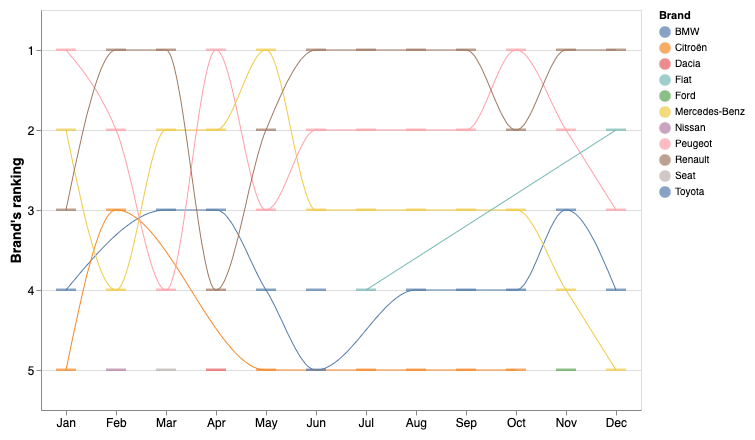
- Interactions — Interactivity is a great way to allow your end user to engage with the data and ask their questions.
what-is-the-purpose-of-data-visualization
What is the Purpose of Data Visualization?
Visualizing data is built around the idea of simplifying the complex. Have you ever tried explaining how something a complicated concept to anyone else? It rarely goes well. The best way to show your concept is by creating a visual representation of what you are describing. This makes it is easier for others to digest your concept. A picture, or in this case a chart, is worth more than a thousand words.
how-does-data-visualization-fit-in-data-science
How Does Data Visualization Fit In Data Science?
While it may appear that Data Visualization primarily falls within the Communicate section of the Data Science flow diagram in R4DS (seen below), it is actually used throughout the whole process. The only thing that is different is the audience. You will want constant feedback along the way while you are experimenting with the data. Your end user is typically only interested in the results or the end product.

Below are 3 scenarios for visualizing data throughout the Data Science process.
1). Before you can build cool charts, you must first get familiar with your data. Below are a few questions you may need to answer:
- How many
blanksornullsare in each column? - What data types are in a particular column (i.e., string, int, float, etc…)?
- What data is missing?
- Is there enough data in a column to even use it?
- Are there columns that could be combined/extracted for better clarity?
2). When you’re working with models, you will definitely want to see how well the models represent the data. Below are 2 different types of regressions that work slightly different.
- Linear Regression

- Loess Regression (Non-Linear)
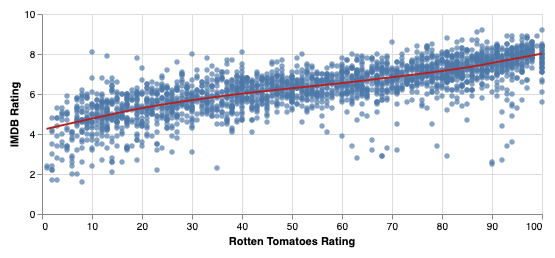
3). After you’ve selected a model, you will want to know how well it is performing at predicting future events.
- For regressions, you may want the R2, as shown in the linear regression above.
- For classification, you may want to see the ROC (Receiver Operating Characteristic) curve.
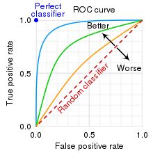
3-1-getting-started
3.1 - Getting Started
what-library-are-you-going-to-use
What Library Are You Going To Use?
Going forward, you will be using the Vega-Lite library to create all our charts and graphics. Vega-Lite describes themselves as “A High-Level Grammar of Interactive Graphics”. What does that mean? Let’s break it down into 3 sections.
1). What is High-Level?
High-level is in relation to other graphic libraries (i.e. Vega and D3.js). Both are libraries that Vega-Lite is built upon. The “level” refers to the detail and code needed to generate a graph. Vega-Lite requires far less code than either of the other libraries.
2). What is the "Grammar of Graphics"?
Grammar of Graphics is a framework to approach the creation of graphics by breaking every chart down into its most basic building blocks. This approach was originally popularized by Leeland Wilkinson in his book titled “The Grammar of Graphics”.
Below is an image depicting the primary layers used to create a chart using the Grammar of Graphics framework.

The benefit here is that instead of describing how to create your chart (e.g. calculating where to position each element), you describe what you want to see. Simply pass the data and tell the framework what to visualize. For example, there is no need to figure out how to calculate different coordinate types (Linear, Circular, and Map) as shown below.
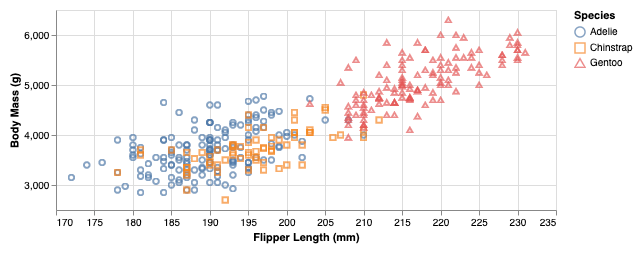
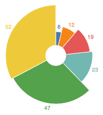
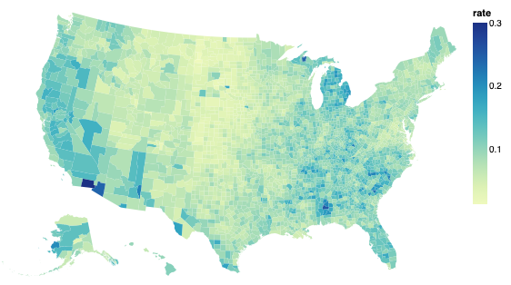
3). What About Interactivity?
The Vega-Lite team has extended the original Grammar of Graphics to include a layer for interactivity. They define their building blocks for interaction as Parameters. Parameters can be either simple variables that change a specific feature or complex selections as shown below.
- Simple Variable
- Complex Selection
5 of the most common building blocks you’ll use in VegaLite are:
- Data — Read information in
- Scales — Transform the data into the right domain
- Axes — Define the lines, ticks, and labels
- Legends — Provide context to the visuals
- Marks — Specify the shape to be displayed
how-do-you-get-started
How Do You Get Started?
Before you can get started, you will need to first install a few packages for Elixir.
- VegaLite — Create charts
- Kino_Vega_Lite — Makes VegaLite render in Livebook
- Kino — Interactive Livebook widgets
- Explorer — Manipulate and clean data with DataFrames
With Livebook, installation is simple. All you need to do is search for the packages you want and the click the “Setup” button to install them.
Note {: .tip} The VegaLite package is a simple wrapper around the original Vega-Lite JavaScript library so that the Elixir community did not have to re-create it from scratch.
wrapping-up
Wrapping Up
Data Visualization is an important process for simplifying complex ideas and allows us to communicate our findings with others and ourselves. It is not simply for generating reports, but communication along the whole Data Science process. In the next section, we’ll be looking at how to get started with reading data into Livebook and then making a basic chart.
3-2-first-steps
3.2 - First Steps
what-is-the-goal-for-this-section
What Is The Goal For This Section?
The goal for this section is for you to be able to create the same chart from a local data source (csv file on your computer) and an external data source (csv file on the web).
Note
Smart Cells require your data to be stored locally. You will not be able to directly use external data sources with Smart Cell features (as of 2022-11-04).
what-do-you-need
What Do You Need?
To get started, you’ll be using the mpg dataset which can be found here. If your unfamiliar with this dataset, you can read the documentation which describes the MPG dataset and gives greater detail as to what each variable is.
Go ahead and download the MPG csv to a folder on your hard drive. It doesn't matter where you put it, just make sure you can get to it. You can then create a variable for the file location. For example:
mpg_file = "#{__DIR__}/data/mpg.csv"
reading-local-data
Reading Local Data
What is a DataFrame?
Before you can work with your CSV file you will need to know what a DataFrame is. According to Databricks, a DataFrame is “a data structure that organizes data into a 2-dimensional table of rows and columns.”. You can consider DataFrames to be a table in a spreadsheet without the Graphical User Interface (GUI). Each column is considered a variable (or field) and each row is considered a record (or observation). A DataFrame is the fundamental data structure that Data Scientists use to manipulate, transform, and even model data.
How Can You Create a DataFrame?
To work with DataFrames in Elixir, you will need to use the Explorer package. Explorer allows you to read data from different formats (e.g., CSV, Text, Parquet, etc.) into a DataFrame for further work. Explorer is built upon the Rust package Polars, which is one of the fastest DataFrame libraries around. Below are a few tables and charts of stats to show you how Polars compares to many other DataFrame libraries.

Note
You can find more Polars benchmarks here.
Explorer will give you plenty of horsepower to manipulate, change and edit your data however you see fit by building upon one of the most powerful DataFrame libraries around.
Like with most libraries in Elixir, you will probably want to alias in your package, so you don’t have to write Explorer.DataFrame or Explorer.Series every time.
Let's start with a little bit of code.
alias Explorer.{DataFrame, Series}Explorer makes creating DataFrames simple and straightforward. To create your MPG DataFrame, use the from_csv!() function and give it the mpg_file variable you created earlier.
mpg = DataFrame.from_csv!(mpg_file)You should see a Livebook output should look something like this:
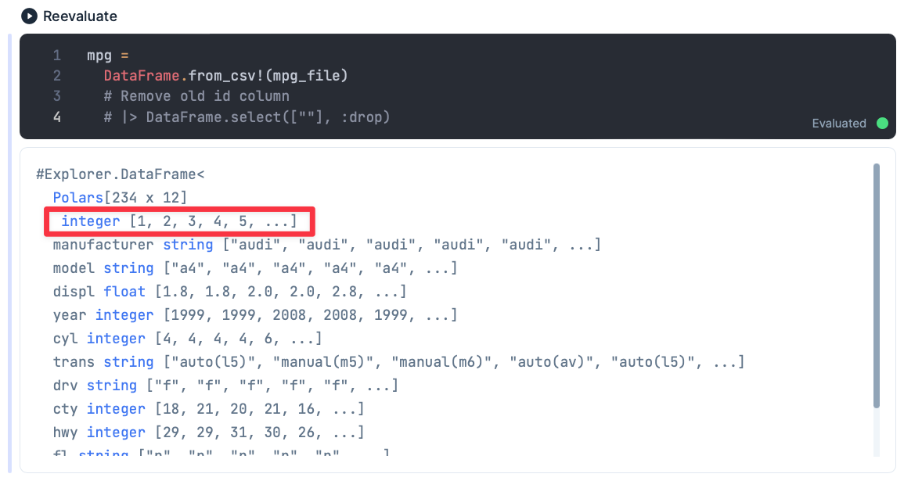
Note
- Explorer automatically shows you the number of rows and columns in the top-left corner. For example, the MPG DataFrame above has 234 rows and 12 columns (234 × 12).
- The red box (above) shows that the first column name happens to be blank. This no-named column is supposed to be the row ID. This shows up blank because Polars (and Explorer) is a column-oriented DataFrame rather than a row-oriented DataFrame where row IDs matter. You can read more about how Polars differs from the “typical” DataFrame libraries like Pandas here.
using-smart-cells-to-create-plots
Using Smart Cells to Create Plots
What Are Smart Cells?
Smart Cells are an option for you to create some predefined functionality in Livebook with no code. Where the Code button lets you write code and Block button lets us write Markdown, the Smart button provide a GUI to create a Smart Cell.
Smart Cells can do multiple things like create charts, connect to databases, create maps and generate SQL queries.
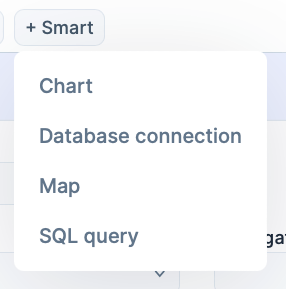
For this use case, you’ll be using the Chart option.
how-do-smart-cells-work
How Do Smart Cells Work?
As you begin to dig into the mpg DataFrame, say you want to understand the relationship between engine displacement and highway miles per gallon. To accomplish that, you’re going to want to create a Scatterplot that shows displ on the x-axis and hwy on the y-axis.
To get started, simply click on the Chart option shown below.
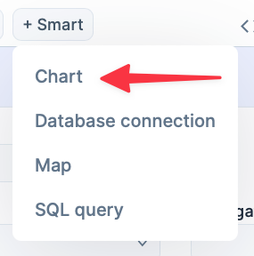
You should be presented with a form that looks like this:
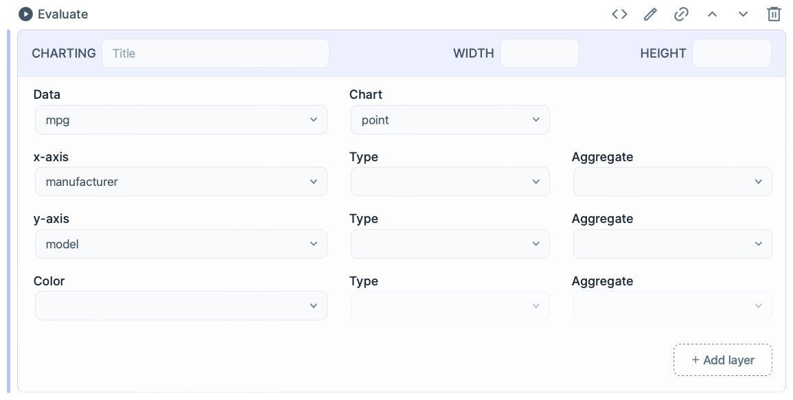
To create the chart, simply change the x and y fields to displ and hwy as well as the types to quantitative, and click Evaluate in the top-left corner to generate the chart.
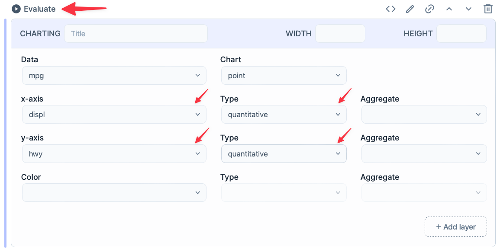
You should now see a chart below your Smart Cell like this:
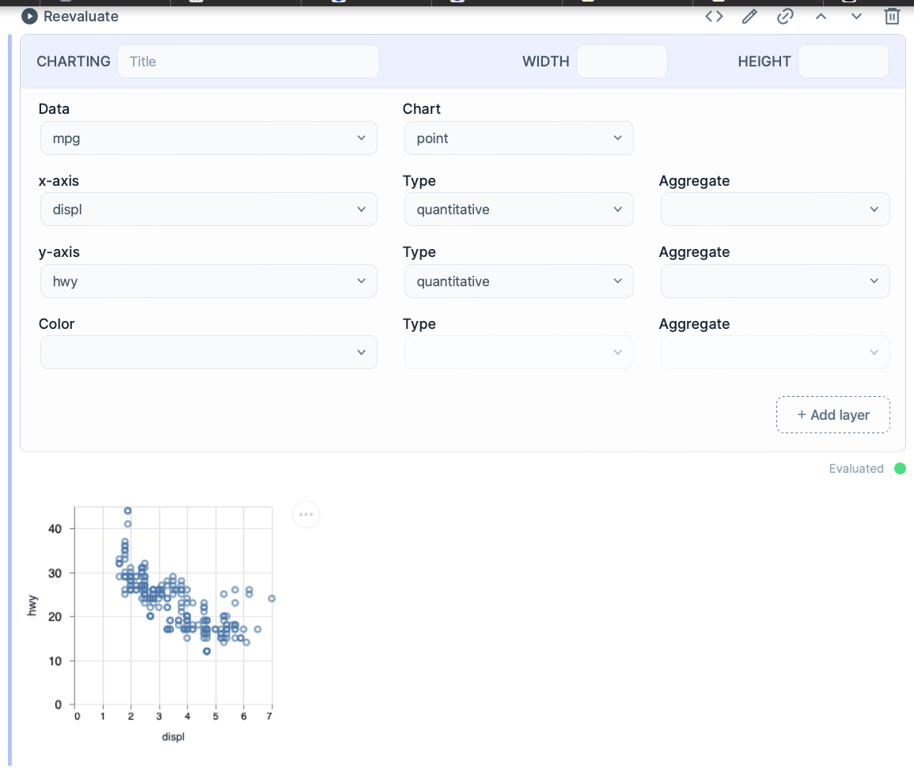
what-are-the-benefits-of-smart-cells
What Are The Benefits of Smart Cells?
The beauty of Smart Cells is you don’t need to know anything about creating charts (or even writing Elixir) to start generating great-looking charts. In addition, Smart Cells have these cool buttons, on the top right, that, when clicked, will actually let you see the underlying code that was generated for you.
Playing around and seeing what code is generated is a great way to start learning how to use the VegaLite library.
Note
As of the time of this writing, Smart Cells require that your data must be saved on your computer. There is an issue on the kino_vega_lite repository to add external data sources.
reading-external-data
Reading External Data
External data sources are those that are not located directly on your computer. For instance, the R community has an excellent collection of datasets here. Each dataset has a link to the CSV file and documentation that describes the data as well as define what each variable is. For your next step, remake the same chart using the same dataset that is now located externally.
Step 0 — Setup
You already brought VegaLite into your environment in the last section when you installed it. To save yourself from typing VegaLite every time you want to use a function you can alias the package as Vl. Your code will look like this:
alias VegaLite, as: VlStep 1 — Find Data Source
You’re going to create a variable, mpg_url, with the url for the MPG dataset from the collection R datasets mentioned above.
mpg_url = "https://vincentarelbundock.github.io/Rdatasets/csv/ggplot2/mpg.csv"Step 2 — Create a New Chart
When using VegaLite, the first step is always to define a new chart with the Vl.new() function.
Note
This is also where you can pass the width and height parameters to define the width and height of the chart. For this chart, your code should look like this:
Vl.new(width: 400)Step 3 — Add Data
Instead of downloading, you can let the VegaLite package handle that for you with the Vl.data_from_url() function. All you need to pass the mpg_url variable to where the data is hosted. When completed your code for this step should look like this:
|> Vl.data_from_url(mpg_url)Step 4 — Define the Chart Type
No chart can be created without specifying the mark type. Marks are used to specify the shapes to create any chart and can be created with the Vl.mark() function. There are a multitude of marks you can use, but today the :point type is what we need. When completed, the code should look like this:
|> Vl.mark(:point)Step 5 — Encode Data to X
In order for any encoding to work properly, you need to specify a variable from your dataset and what type that variable is. It is possible to ignore the type, but you may get some wonky results. This is due to Vega-Lite defaulting to a :nominal (string or category) data type. For this example, you want to define x as displ and define its data type as :quantitative. Your code should look like this:
|> Vl.encode_field(:x, "displ", type: :quantitative)Step 6 — Encode Data to Y
For Y you can follow the same process as X except that the variable you need to encode is hwy. Your code should look like this:
|> Vl.encode_field(:y, "hwy", type: :quantitative)Step 7 — Combine It Together
That’s it! Because Elixir is a functional language that uses pipes (|>), you simply combine the steps together much like you would a baking recipe. The whole things should look like this:
Vl.new(width: 400)
|> Vl.data_from_url(mpg_url)
|> Vl.mark(:point)
|> Vl.encode_field(:x, "displ", type: :quantitative)
|> Vl.encode_field(:y, "hwy", type: :quantitative)Note
Elixir uses the pipe operator (|>) to pass the output of one step to the input of the next step. This saves you from having to create intermediate variable names and makes your code more concise, and readable by showing the transformation of data from top to bottom.
Vega-Lite Template to Follow
VegaLite has a typical pattern it expects and follows. Below is an example showing the normal “recipe” use to create a chart.
Vl.new() # Initialize a Vega-Lite Chart
|> Vl.data_from_*(data) # Read in data
|> Vl.transform() # Manipulate the data - optional
|> Vl.param() # Add interactivity - optional
|> Vl.mark(:mark) # Specify the shape used
|> Vl.encode_field(:var, "field_name", type: :quantitative) # Encode channels (:x, :y, etc...) with specific fields from the dataset
... # encode as many channels as you wishWrapping Up
Congratulations! You just created your first DataFrame and Chart! Now that you know how to use Smart Cells, you can create great-looking charts without coding. This can be a great way to learn how the library works, and a great starting place to customize further. You finished up by creating your own chart from scratch that used an external data source.
In the next section you’ll learn how to work with encoding different channels (i.e., x, y, color, size, etc…) in a chart.
3-3-encoding-channels
3.3 - Encoding Channels
introduction
Introduction
Any chart, on it's own, can be pretty boring and lifeless. This can lead to the reader not understanding your point. They need a splash of color or an explosion of size to start taking shape and bring understanding. In Vega-Lite, much of the look and feel of any graphic comes from adding data to channels. Doing this will breathe life into your data and help give it some shape. Great…but what are channels?
Channels are the visual properties of a chart (like size, shape, and color) you encode with your data. Said another way, channels are where you can customize your chart with your data. To aid you in this task, Vega-Lite provides you with numerous channels to use for chart creation.
In this section you will go over encoding data points in charts, in order to assist in communicating a more specific visual narrative, through manipulating channels, specifically:
- Color
- Shape
- Size
- Opacity
- Conditional Formatting
To run these examples you will you need to install the following Elixir packages:
- explorer
- vega_lite
- kino
- kino_vega_lite
The typical code structure for a chart can be automated using Smart Charts in Elixir

This will leave you with the following code:
Vl.new(width: 400, title: "Code Template")
|> Vl.data_from_values(mpg, only: ["displ", "hwy"])
|> Vl.mark(:point)
|> Vl.encode_field(:x, "displ", type: :quantitative)
|> Vl.encode_field(:y, "hwy", type: :quantitative)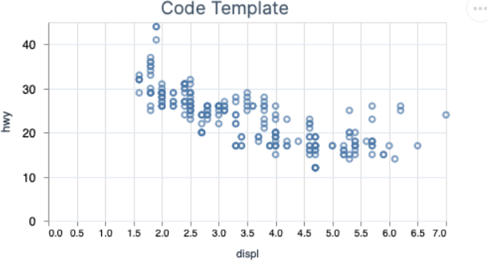
In this Section you will be focusing on changing the following line of code below that needs to be added to the template above:
#Vl.new(width: 400, title: "Code Template")
#|> Vl.data_from_values(mpg, only: ["displ", "hwy"])
#|> Vl.mark(:point)
#|> Vl.encode_field(:x, "displ", type: :quantitative)
#|> Vl.encode_field(:y, "hwy", type: :quantitative)
|> VL.encode_field(:XXXX, "class", type: :nominal)...where the XXXX above is used to encode channels (i.e. Shape, Opacity, etc.).
Note
Other types of marks can be found here
1-color
1) Color
Smart Cells are a great way to create charts with minimal effort. Once created, you can convert them to code to further customize. The Chart Smart Cell is what you'll use below to color the mpg dataset by class.

Converting the above smart cell Chart will leave you with the following code:
Vl.new(width: 400, title: "Color by Class")
|> Vl.data_from_values(mpg, only: ["displ", "hwy", "class"])
|> Vl.mark(:point)
|> Vl.encode_field(:x, "displ", type: :quantitative)
|> Vl.encode_field(:y, "hwy", type: :quantitative)
|> Vl.encode_field(:color, "class", type: :nominal)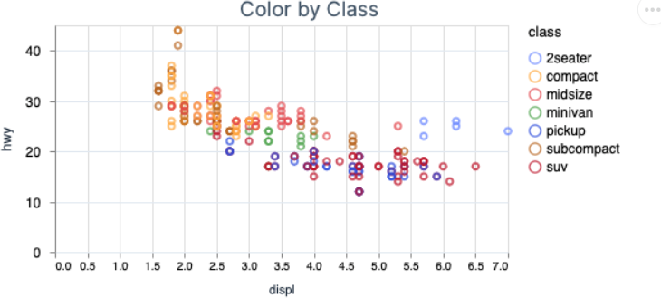
There can also be times where you need to change all of the datapoints to a single color (i.e."black"). In order to do so, you will need to change the following line of code from...
|> Vl.encode_field(:color, "class", type: :nominal)...to
|> Vl.encode(:color, value: "black")Your code should now look like the code below.
Vl.new(width: 400, title: "Color All Points Black")
|> Vl.data_from_values(mpg, only: ["displ", "hwy", "class"])
|> Vl.mark(:point)
|> Vl.encode_field(:x, "displ", type: :quantitative)
|> Vl.encode_field(:y, "hwy", type: :quantitative)
|> Vl.encode(:color, value: "black")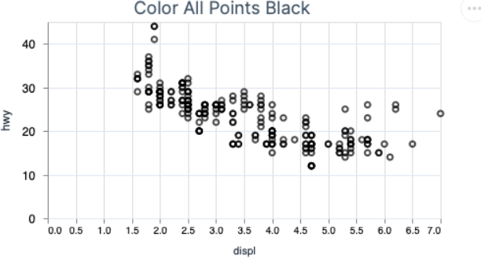
Note
Vl.encode_field is changed to Vl.encode(). This is due to the "_field," part of the code is shorthand for the encode funtion that uses the field parameter. Since we are not using a field from the dataset to color the points black part of the code ("_field") is not helpful. Use the more generic encode function by removing "_field," as shown above. You can read more about it in the documentation.
To the create filled in circles as opposed hollow circles simply change the :point mark to :circle. Your code will then look like this.
Vl.new(width: 400, title: "Color Fill All Points Black")
|> Vl.data_from_values(mpg, only: ["displ", "hwy", "class"])
|> Vl.mark(:circle)
|> Vl.encode_field(:x, "displ", type: :quantitative)
|> Vl.encode_field(:y, "hwy", type: :quantitative)
|> Vl.encode(:color, value: "black")
2-shape
2) Shape
Working from the chart created with the Smart Cells, you can change the :shape instead of :color by changing one line of code. Change
|> Vl.encode_field(:color, "class", type: :nominal)to
|> Vl.encode_field(:shape, "class", type: :nominal)Your code should match the code below.
Vl.new(width: 400, title: "Shape")
|> Vl.data_from_values(mpg, only: ["displ", "hwy", "class"])
|> Vl.mark(:point)
|> Vl.encode_field(:x, "displ", type: :quantitative)
|> Vl.encode_field(:y, "hwy", type: :quantitative)
|> Vl.encode_field(:shape, "class", type: :nominal)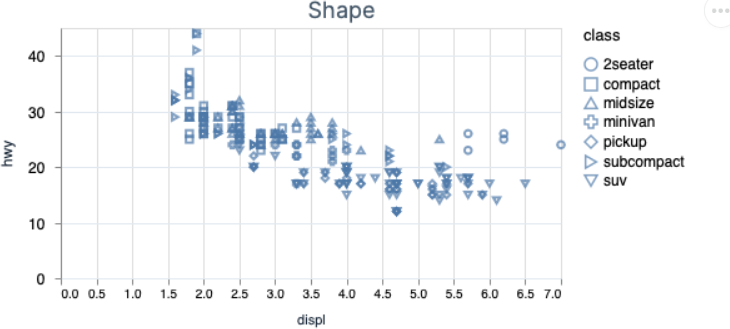
Note
While there are many mark types to choose from, you must use the
:pointmark when encoding the:shapechannel.
3-size
3) Size
Next up is Size. The only needed change, again, is the last line of code. You are removing :shape and replacing that with :size.
Vl.new(width: 400, title: "Size")
|> Vl.data_from_values(mpg, only: ["displ", "hwy", "class"])
|> Vl.mark(:point)
|> Vl.encode_field(:x, "displ", type: :quantitative)
|> Vl.encode_field(:y, "hwy", type: :quantitative)
|> Vl.encode_field(:size, "class", type: :nominal)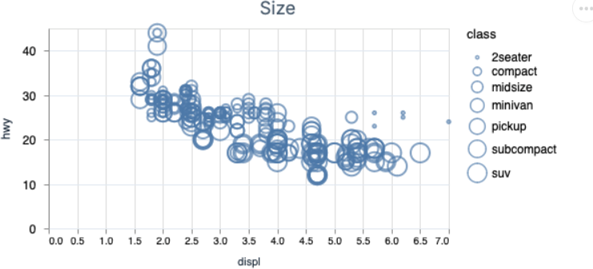
Again, to change the data points to a filled vs. hollow circles, change the mark from :point to :circle.
Vl.new(width: 400, title: "Size With Solid Points")
|> Vl.data_from_values(mpg, only: ["displ", "hwy", "class"])
|> Vl.mark(:circle)
|> Vl.encode_field(:x, "displ", type: :quantitative)
|> Vl.encode_field(:y, "hwy", type: :quantitative)
|> Vl.encode_field(:size, "class", type: :nominal)
4-opacity
4) Opacity
You may have noticed that Vega_lite defaults to include opacity in all of the exersizes we have already completed. However, you can specify opacity in the last line of code, substituting :size for :opacity.
Vl.new(width: 400, title: "Opacity")
|> Vl.data_from_values(mpg, only: ["displ", "hwy", "class"])
|> Vl.mark(:point)
|> Vl.encode_field(:x, "displ", type: :quantitative)
|> Vl.encode_field(:y, "hwy", type: :quantitative)
|> Vl.encode_field(:opacity, "class", type: :nominal)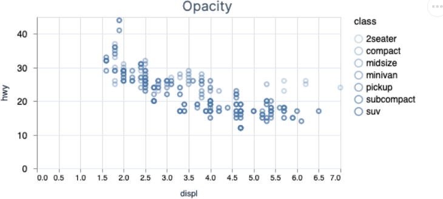
5-conditional-encoding
5) Conditional Encoding
How does conditional formatting work?
Vega-Lite’s conditions may look a little different, but are simple if-then statements. Each condition has a test, a value and a default value. The test checks to see if a condition is true. If it is, then the value is applied. Otherwise, apply the default value.
Looking at the Opacity chart above it appears that there are outliers in the dataset. If you look at the X and Y axis the outliers are grouped where: the y-axis is greater than 20 and the x-axis is greater than 5.
In order to visually show the outliers you can isolate them by changing colors, shape, size, etc.. Let's try to isolate the outliers using color
Vl.new(width: 400, title: "Conditional Encoding")
|> Vl.data_from_values(mpg, only: ["hwy", "displ", "class"])
|> Vl.mark(:circle)
|> Vl.encode_field(:y, "hwy", type: :quantitative)
|> Vl.encode_field(:x, "displ", type: :quantitative)
|> Vl.encode(:color,
condition: %{test: "datum['hwy'] > 20 & datum['displ'] > 5", value: "red"},
value: "black"
)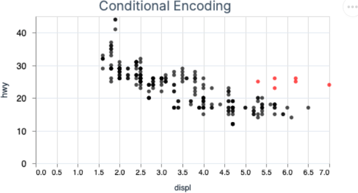
One thing to notice in the code above is the use of the datum variable in your conditional test.
The datum variable represents a row in your dataset passed into VegaLite. You can access any column within the row by typing datum["column_name"]. datum is commonly used in conditional encoding to specify a constant instead of a variable. It can be used anywhere you need to change how a column is handled based on its value. You'll see it used more throughout other Data Visualization sections.
wrapping-up-1
Wrapping Up
Encoding channels with your data is what brings life to the charts you make. Channels provide you the flexibility to customize to your heart's content and to help your users better understand the story you’re sharing with them. Even though you covered seven different scenarios, you only just scratched the surface of all the different channels that Vega-Lite makes available to you. Check out them out and start experimenting to see what you can come up with.
3-4-help-to-common-problems
3.4 - Help to Common Problems
What common problems can we expect to face?
Why do those problems matter?
In this section, you'll learn a few features Livebook has to help you learn code and become a more effiecint Data Scientist through the following three sections:
- How to find function definitions and examples without leaving Livebook
- How to read and understand an error message
- How to see what happening in your pipeline with
dbg
Note
Pipelines are the combination of multiple functions with the pipe operator (
|>):|> Super.cool(stuff)You will learn more about pipes in a future chapter.
1-how-to-find-function-definitions-and-examples-without-leaving-livebook
1) How To Find Function Definitions And Examples Without Leaving Livebook
Learning a new language requires effort. Everybody understands that it is not possible to have a new program language memorized on day one. To help you learn Elixir, developers have embedded the capability to see support documetation and examples at your fingertips. This will help you learn more effectively and accelerate your learning curve.
The typical way of finding code examples and function definitions is something like this:
- Do a Google search for documenation
- Hope you clicked on the right version of the documentation
- Comb through the documentation for the specific function that you need
Elixir in Livebook allows you to:
- Hover over the function you type
- Recieve pop-up window with the
- Function definition
- Code examples
- Link to the official documentation website
Check out the example below on hovering over the functions in your code.
Show :color by class
Show autocomplete for function selection, then Hover over function to help decide if it is what you want
2-how-to-read-and-understand-an-error-message
2) How To Read And Understand An Error Message
Errors are common in all programming languages. For most programming languages, error messages are not intuitive for beginners. They often leave you wondering what the problem is and why it is happening.
Elixir is known for having better error messages and additional tools that help you quickly diagnose and resolve the errors hidden in your code
How is it better with Elixir?
The Elixir team has worked hard to create readable and helpful error messages. The community have a motto of failing fast so that you can find errors early on before they have a chance to compound. The capability to diagnose and resolve errors, as they occur, helps you confidently build analytical products that just work.
You can see a couple of error messages shown below.
Show :color by class
Change mark to :block
- Show iterating through a
tupleusingEnum.map - Show error description
- Show file and line location of error
Note
You can find the specific location of any cell by clinking on the link icon in the top right-hand corner of the Livebook cell.
- Show iterating through a
listusingEnum.mapand multiplying a letter by 3 - Show error description
- Show file and line location of error
3-how-to-see-what-happens-in-your-code-pipeline-with-dbg
3) How To See What Happens In Your Code Pipeline With dbg
Two big reasons why beginners have a difficult time learning languages are:
- Knowing the syntax
- Understanding what your computer is actually doing for each line of code
Learning the syntax requires work and can be solved by spending time with the language.
To solve the second problem, revealing what the code is doing at each step of the way within a pipeline, Elixir developers created the dbg function.
Check out the two examples shown below.
Show :color by class using dbg
Convert range to list and multiply each element by 2 using dgb
Note
We will be discussing pipeline in more depth in a futute chapter
4-livebook-keyboard-shortcuts
4.) Livebook keyboard Shortcuts
As you spend more time in Livebook, you will naturally want to learn the keyboard shortcuts to speed up your analytical iterations. Livebook provides you a keyboard button in the bottom left. Clicking it will show a pop-up window with all the different keyboard shortcuts available to you.
3-5-concatenation-and-facets
3.5 - Concatenation And Facets
When exploring your dataset, it can be adventageous to see charts side-by-side.
- Why? -> See how differnt columns relate to a common variable (often your x-axis)
- WHy? -> Help you to quickly spot interesting trends or outliers
Elxiir Concat documentation
Javascript Concat documentation
Elixir Facet documentation
Javascript Facet documentation
What is Concatenation?
- Concantenation allows you to place 2 or more charts either side-by-side (
:horzontal) or stacked (:vertical). - What scenarios would you need them?
- Allows you to compare multiple columns side-by-side
Show side-by-side charts of :opacity and :shape from Section 3.3
Vl.concat()What Are Facets?
- Why would you need them?
- Allows you to compare all the categories within a column
- Say you have a chart colored by class with a bunch of data points that overlap each other and is difficult to see each color
- Facets allow you to separate each category into it's own chart to have better visual clarity
Show facet wrap by :class when :x is displ and :y is hwy and :color is class where the number of columns is 4
Show facet by :drv and :cyl when :x is displ and :y is hwy and :color is class
Compare approach above from facet function in Vegalite